Deportistas
Entrena de forma
más segura.
TU BIENESTAR BAJO EL MISMO SOL
Solar combina un wearable y una app inteligente para monitorear tu exposición al sol y calor, cuidar tu salud y ayudarte a tomar mejores decisiones cada día.
EL PROBLEMA
Las altas temperaturas y la exposición solar pueden causar deshidratación, golpes de calor y afectar tu rendimiento diario, especialmente si estudias, trabajas o practicas deporte al aire libre.
Entrena de forma
más segura.
Rinde más cuidando
tu salud.
Protege tu bienestar
en todo momento.
NUESTRA SOLUCIÓN
Solar te da información clara, personalizada y accionable para que puedas disfrutar el sol sin poner en riesgo tu salud.
Conoce el producto →SOLAR APP
Una experiencia simple para entender tu estado, responder a tiempo y construir hábitos de prevención.
Abrir panel completo →Tu estado térmico, en una sola vista.
Hidrátate con frecuencia, modera el ritmo y busca sombra.
SOLAR EN MOVIMIENTO
Monitoreo inteligente que te acompaña en tu rutina, interpretando tu entorno y tu estado en tiempo real.
Detecta cómo se acumulan el calor, el UV y el esfuerzo.
Consulta tu estado en tiempo real desde tu muñeca o la app.
Recibe recomendaciones claras: hidratarte, pausar o buscar sombra.
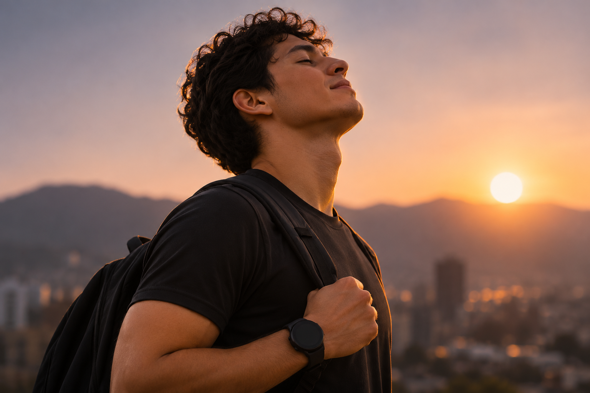
SOLAR BAND
Un wearable inteligente que monitorea tu exposición al sol y calor, conectado a una app que te cuida en todo momento.
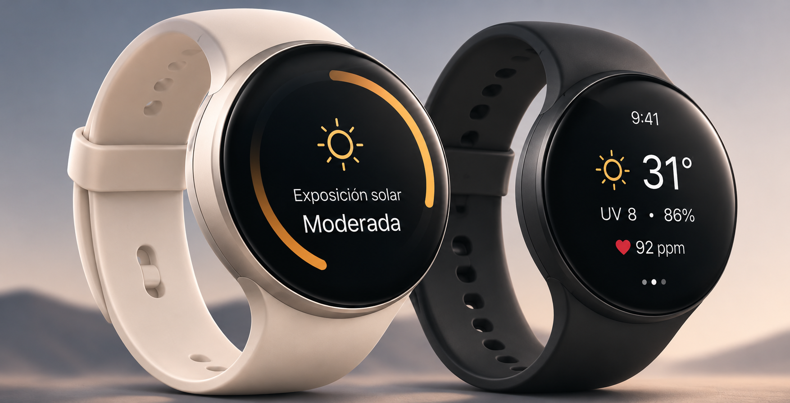
DISEÑO QUE TRABAJA
Cada elemento de Solar Band está pensado para acompañarte sin distraerte: sensores, pantalla y materiales que resisten el ritmo real del día.
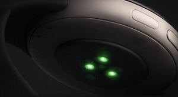
Lecturas ambientales y fisiológicas en tiempo real.
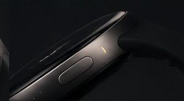
Ligero, cómodo y discreto.
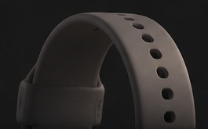
Correa suave e hipoalergénica.
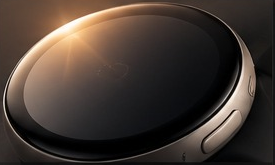
Visible incluso bajo el sol.
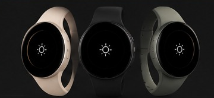
Arena · Negro · Verde.
EN LA CAJA
Un sistema completoDISEÑADO PARA TU DÍA
Solar acompaña distintos ritmos y contextos sin pedirte que cambies tu forma de moverte.
Distingue esfuerzo normal de una señal que pide bajar el ritmo.
Previene golpes de calor y registra tus pausas de recuperación.
Entiende cómo el sol, el calor y la exposición se acumulan.
Recibe una recomendación concreta, no solo un número.
TODO CONECTADO
La arquitectura de Solar convierte señales dispersas en prevención útil, sin perder trazabilidad.
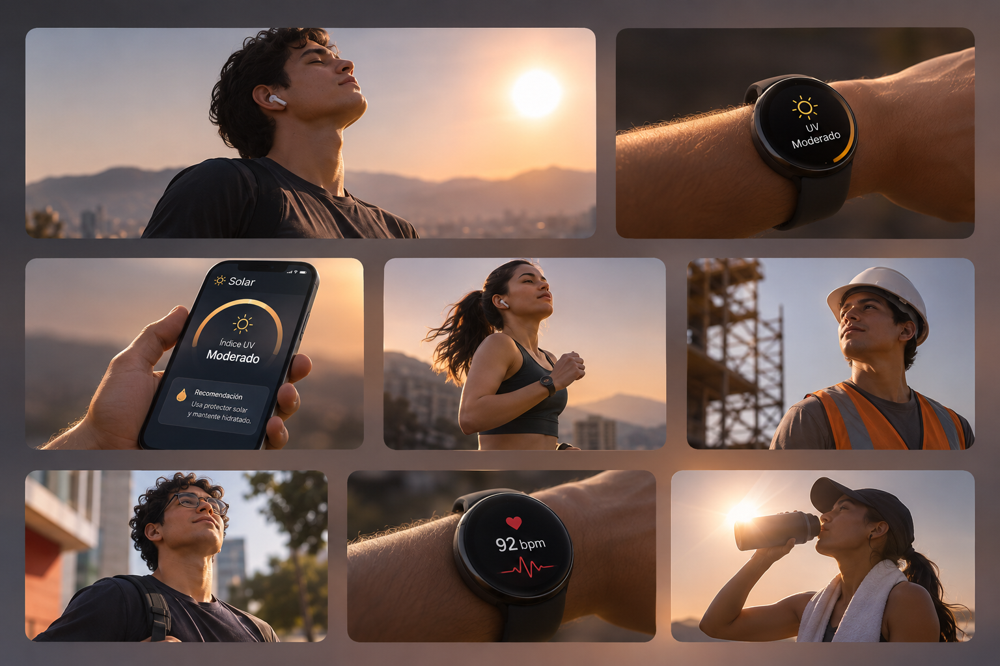
Integra temperatura, humedad, índice UV, frecuencia cardíaca y temperatura corporal estimada.
Ver monitoreo ↗Identifica riesgo normal, preventivo o elevado y comunica qué hacer a continuación.
Ver alertas ↗Guías contextuales para hidratarte, buscar sombra, pausar y retomar tu actividad.
Ver guía ↗Revisa exposición acumulada, sesiones, promedios fisiológicos y momentos de mayor riesgo.
Ver historial ↗Registra actividad, pausas de recuperación y periodos sin lectura con trazabilidad.
Ver sesiones ↗Gestiona tu Solar Band, patrones de alerta, contacto de confianza y perfil preventivo.
Ver configuración ↗CÓMO FUNCIONA
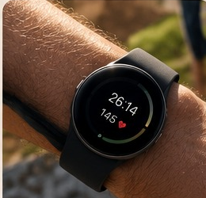
El wearable registra señales fisiológicas durante tu actividad.
Solar cruza tus lecturas con clima, humedad, UV y exposición acumulada.
El motor clasifica tu estado como normal, preventivo o elevado.
Recibes recomendaciones claras y puedes registrar la acción tomada.
NIVELES DE RIESGO
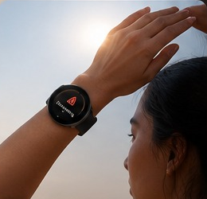
Mantén tu hidratación habitual y continúa con atención a tu entorno.
Hidrátate, modera el ritmo y busca sombra periódicamente.
Detén la actividad, busca un lugar fresco y sigue la guía inmediata.
SOLAR APP
Prueba las vistas principales del sistema con datos simulados persistentes.
PREGUNTAS FRECUENTES
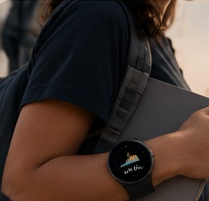
Es un sistema preventivo que integra un wearable, contexto climático y una plataforma web para anticipar señales de estrés térmico.
No. Solar es una herramienta de prevención y orientación; no diagnostica ni sustituye la atención médica.
El sistema muestra los datos como desactualizados y nunca asume que estás fuera de peligro.
Estudiantes, deportistas y trabajadores que realizan actividades prolongadas al aire libre.
HABLEMOS DE PREVENCIÓN
¿Quieres implementar Solar en tu institución, equipo deportivo o jornada de trabajo? Cuéntanos qué necesitas.